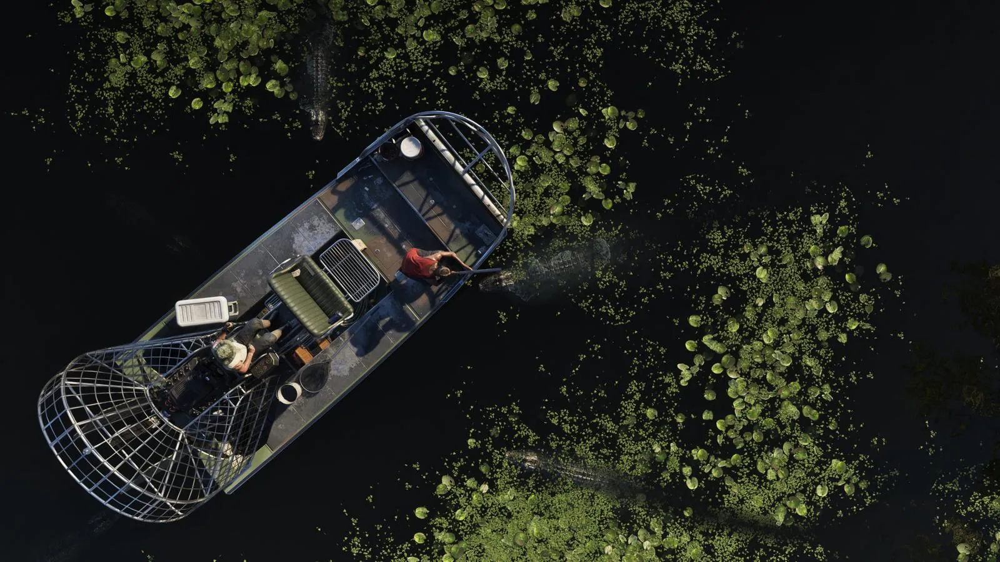

Кокаиновые фламинго GTA 6: сколько их и как собрать
Опубликовано:

- В Леониде 125 кокаиновых фламинго; для 100% хватит любых 100.
- Нужные — с чёрно-белым клювом; с жёлто-чёрным — обычная декорация.
- Фламинго нужно расстрелять в корпус: из него выпадает пакет с кокаином.
- 50 штук открывают чит Inflatable Flamingo (читы работают после финала сюжета).
Что это такое
Кокаиновые фламинго — розовые садовые фигурки, внутри которых спрятан пакет с кокаином. Они стоят на газонах, во дворах, у мотелей и на пляжах по всей Леониде, и собирать их можно в любой момент в открытом мире — миссий для этого не нужно.
Как отличить и собрать
- Смотрите на клюв. У коллекционного фламинго клюв чёрно-белый. Розовый цвет сам по себе ничего не значит: декоративных фламинго в игре много, и у них клюв жёлто-чёрный — из таких ничего не выпадает.
- Стреляйте в корпус. Фигурка разлетится, внутри — пакет с кокаином. Фламинго засчитывается сразу, подбирать пакет не обязательно.
- Пакет можно продать скупщику — это обычный товар.
Где смотреть прогресс
Прогресс → Коллекции → Исследование → Кокаиновые фламинго. Строчка появляется только после первой найденной фигурки, так что если её нет — вы ещё ни одного не нашли.
Что дают
| Сколько | Что |
|---|---|
| любые 100 | пункт чек-листа 100% |
| 50 | чит Inflatable Flamingo — надувной фламинго (после финала сюжета) |
| каждый | пакет кокаина для скупщика |
С чего начать
Первый фламинго в списке PowerPyx — в La Perle (Вайс-Сити), к северо-западу от квартиры Тайрона: в центре здания в форме буквы «С», на уровне земли. Много фигурок в округе Mariana — на островах Leonida Keys. Точные места мы отметим на интерактивной карте, когда соберём их по скриншотам из игры.
Частые вопросы
Сколько кокаиновых фламинго в GTA 6?
125. Для 100% нужно любые 100.
Как отличить кокаинового фламинго?
По чёрно-белому клюву. У декоративных — жёлто-чёрный, из них ничего не выпадает.
Что дают кокаиновые фламинго?
Пакет кокаина для скупщика с каждого, пункт 100% за 100 штук и чит Inflatable Flamingo за 50.
Нужно ли подбирать пакет?
Нет, фламинго засчитывается сразу после выстрела.
Источники: PowerPyx, «GTA 6 All Cocaine Flamingo Locations», 18.11.2026; GMTreks, «Cocaine Flamingos», 19.11.2026; Bloxodes, «Cocaine Flamingos», 18.11.2026; Red Bull и Playday — список читов, 18.11.2026. Кнопки указаны для PS5, в скобках — Xbox.